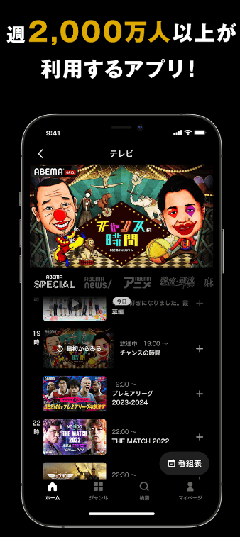

ABEMA 速查：PPV、会员、卡顿、解约一把讲清
ABEMA 是什么人在用？PPV 买了能不能退？两档会员差在哪？卡顿怎么排查？这篇快问快答把高频问题一次说透。
整理一篇关于 ABEMA 的快问快答——把新用户最容易踩坑的点一次性捋清楚。
ABEMA 到底是什么，谁需要它？
ABEMA 是日本的免费视频流媒体平台，主打「电视直播 + 点播剧集 + PPV 付费赛事」三合一，它的官网上有完整的频道列表和最新动态。免费档就能看三十多个 24 小时直播频道（新闻、动画、综艺、体育各一个线），会员档解锁四万多部限定内容，PPV 单买一场也能看。常驻日本、追日本动画或体育赛事直播的人最刚需，国内用户如果对日语内容感兴趣也可以用，但要留意网络和设备兼容。

怎么装，哪些设备支持？
安装包从官方下载拿，手机端也可以直接在应用商店搜 ABEMA，Android 走 Google Play、iOS 走 App Store。电视端覆盖 Android TV、Apple TV、Amazon Fire TV 三大阵营，各自进对应应用商店装。网页版在官网直接用浏览器访问，登录账号后订阅状态和播放记录全平台同步。移动浏览器不支持播放，想看直播或 PPV 必须进应用或用 PC 浏览器。
PPV 是什么，买了能不能退？
PPV 是单场付费内容（比如体育赛事直播、演唱会、限定剧集），下单即成交、不可退款。这是 ABEMA 和会员订阅最大的区别——会员不想要了可以解约回到免费档，PPV 买错场次、错估金币、看不了直播都没得退。每场 PPV 的销售截止时间和观看期限各自独立，有的开演后即停售，有的卖到回放期结束，期限在作品页标注，购票前务必核对。
会员有几档，我该选哪个？
目前有三档：免费档（有广告、限频道）、广告会员月额 680 日元、全价会员月额 1180 日元。广告会员和全价会员内容库完全一致，差在四个点：广告会员有插播广告、不能追っかけ再生（直播从开头补看）、不能离线下载、回放看不到弹幕。选广告会员的前提是你不在乎这四点、纯看内容；通勤要离线、直播想追播、对广告零容忍的直接上全价会员。拿不准就全价会员先免费试用体验完再降档。更细的会员档位对比和 PPV 规则可以去ABEMA文档翻。
播放卡顿、加载慢怎么办？
从网络、版本、设备、平台四层排查，大多数卡顿三步内解决。第一层先测网速——直播码率高，3Mbps 以下就容易转圈，Wi-Fi 信号弱的位置先靠近路由器试试。网络差的时点别硬推高画质，降到省流量档反而能顺滑看完。第二层检查应用版本，商店装的进商店更新，安装包装的重取新包，更新后彻底杀掉应用重开（不是退后台，是划掉重启）。第三层清理设备存储，剩余空间不足 1GB 时缓存写入失败会影响播放稳定性。以上全无效再考虑平台侧——大型赛事开播时段服务器压力大，临时卡顿等几分钟再进，官方帮助中心会同步公告。
会员想退订，入口在哪？
解约操作发生在订阅平台，不在 ABEMA 应用里——在哪儿订阅就回哪儿退订。Google Play 订阅进「账号 → 付款与订阅 → 订阅」找到 ABEMA 取消；App Store 订阅进 iPhone 设置 → 顶部你的名字 → 「订阅」里操作；网页端信用卡/运营商代扣登录网页版在「マイページ → 視聴プラン」里解约。解约只是关掉自动续费，已付的这个月照常用到到期日，到期后回到免费档但收藏、通知等基础功能不受影响。注意免费试用期的解约要在试用结束前 24 小时取消。
未成年人买 PPV 有什么限制？
ABEMA 官方明确：未满 20 岁的用户购买 PPV 必须取得监护人同意，账单走监护人绑定的支付方式。另外设备上也有差别——电视设备和部分平板只能看不能买，先在手机或电脑上完成购买再到电视端观看。
最后一句总结：需要日本 TV 直播、追动画或体育赛事的人值得装，PPV 出手前核对场次和期限，会员档按自己能不能忍广告和缺省功能来选。